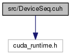
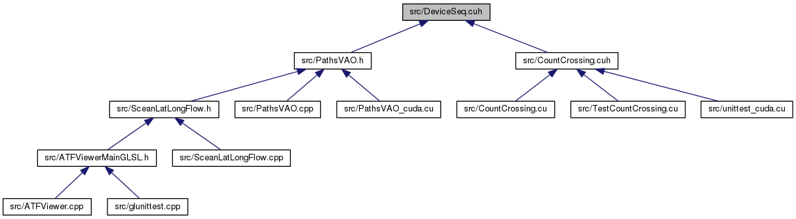

ATFViewer
Main Page
Classes
Files
File List
File Members
All
Classes
Files
Functions
Variables
Typedefs
Enumerations
Enumerator
Macros
src
Classes
DeviceSeq.cuh File Reference
#include <cuda_runtime.h>
Include dependency graph for DeviceSeq.cuh:

This graph shows which files directly or indirectly include this file:

Classes
class
DeviceSeqConst< T >
ホスト上の配列(変更不可)に対応したデバイス上のメモリを確保・使用する
More...
class
DeviceSeq< T >
ホスト上の配列(変更可能)に対応したデバイス上のメモリを確保・使用する
More...
class
DeviceMemory< T >
Generated on Sun Sep 11 2016 04:18:37 for ATFViewer by
1.8.6
 1.8.6
1.8.6